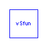
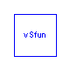

This package contains connectors and interfaces (partial models) for the ASM2d
secondary clarifier model based on Takacs [1] (double-exponential settling velocity).
Main Author: Gerald Reichl Technische Universitaet Ilmenau Faculty of Informatics and Automation Department Dynamics and Simulation of ecological Systems P.O. Box 10 05 65 98684 Ilmenau Germany email: gerald.reichl@tu-ilmenau.de
References:
[1] I. Takacs and G.G. Patry and D. Nolasco: A dynamic model of the clarification-thickening
process. Water Research. 25 (1991) 10, pp 1263-1271.
Copyright (C) 2001 - 2002, Gerald Reichl
The Modelica package is free software; it can be redistributed and/or modified under the terms of the Modelica license, see the license conditions and the accompanying disclaimer in the documentation of package Modelica in file "Modelica/package.mo".
WasteWater.ASM2d.SecClar.Takacs.Interfaces.ratios
partial model for ASM2d ratios of solid components
partial model ratios "partial model for ratios of solid components" // ratios of solid components Real rXi; Real rXs; Real rXh; Real rXpao; Real rXpp; Real rXpha; Real rXa; Real rXmeoh; Real rXmep; end ratios;
WasteWater.ASM2d.SecClar.Takacs.Interfaces.SCParam
partial model providing clarifier parameters
| Name | Default | Description |
|---|---|---|
| zm | height of m-th secondary clarifier layer [m] | |
| Asc | area of secondary clarifier [m2] |
partial model SCParam "partial model providing clarifier parameters" package SI = Modelica.SIunits; parameter SI.Length zm; parameter SI.Area Asc; end SCParam;
WasteWater.ASM2d.SecClar.Takacs.Interfaces.SCVar
partial models providing ASM2d variables
partial model SCVar "partial models providing variables" package WWU = WasteWater.WasteWaterUnits; WWU.MassConcentration X "total sludge concentration in m-th layer"; WWU.MassConcentration Xf "total sludge concentration in clarifier feed"; WWU.SedimentationVelocity vS "sink velocity in m-th layer"; WWU.SedimentationFlux Jsm "sedimentation flux m-th layer"; WWU.MassConcentration So "Dissolved oxygen"; WWU.MassConcentration Sf "Readily biodegradable substrate"; WWU.MassConcentration Sa "Fermentation products"; WWU.MassConcentration Snh "Ammonium"; WWU.MassConcentration Sno "Nitrate (plus nitrite)"; WWU.MassConcentration Spo "Phosphate"; WWU.MassConcentration Si "Inert, non biodegradable organics"; WWU.Alkalinity Salk "Bicarbonate alkalinity"; WWU.MassConcentration Sn2 "Dinitrogen"; end SCVar;
WasteWater.ASM2d.SecClar.Takacs.Interfaces.LowerLayerPin
Connector for ASM2d information and mass exchange between layers below the influent layer (feed_layer).
connector LowerLayerPin "Connector below influent layer" package WWU = WasteWater.WasteWaterUnits; // return and waste sludge flow Qr, Qw flow WWU.VolumeFlowRate Qr; flow WWU.VolumeFlowRate Qw; // sedimentation flux flow WWU.SedimentationFlux SedFlux; // total sludge concentration in m-th layer WWU.MassConcentration X; // total sludge concentration and sink velocity in // (m-1)-th layer (dn=down) WWU.MassConcentration X_dn; WWU.SedimentationVelocity vS_dn; // soluble components WWU.MassConcentration So; WWU.MassConcentration Sf; WWU.MassConcentration Sa; WWU.MassConcentration Snh; WWU.MassConcentration Sno; WWU.MassConcentration Spo; WWU.MassConcentration Si; WWU.Alkalinity Salk; WWU.MassConcentration Sn2; end LowerLayerPin;
WasteWater.ASM2d.SecClar.Takacs.Interfaces.UpperLayerPin
Connector for ASM2d information and mass exchange between layers above the influent layer (feed_layer).
connector UpperLayerPin "Connector above influent layer" package WWU = WasteWater.WasteWaterUnits; // effluent flow flow WWU.VolumeFlowRate Qe; // sedimentation flux flow WWU.SedimentationFlux SedFlux; // total sludge concentration and sink velocity in // (m-1)-th layer (dn=down) WWU.MassConcentration X_dn; WWU.SedimentationVelocity vS_dn; // soluble components WWU.MassConcentration So; WWU.MassConcentration Sf; WWU.MassConcentration Sa; WWU.MassConcentration Snh; WWU.MassConcentration Sno; WWU.MassConcentration Spo; WWU.MassConcentration Si; WWU.Alkalinity Salk; WWU.MassConcentration Sn2; end UpperLayerPin;
Takacs double-exponential sedimentation velocity function.
| Name | Default | Description |
|---|---|---|
| v0slash | 250.0 | max. settling velocity in m/d |
| v0 | 474.0 | max. Vesilind settl. veloc. in m/d |
| rh | 0.000576 | hindered zone settl. param. in m3/(g SS) |
| rp | 0.00286 | flocculant zone settl. param. in m3/(g SS) |
| fns | 0.00228 | non-settleable fraction in - |
function vSfun "Sedimentation velocity function" // total sludge concentration in m-th layer in g/m3 or mg/l input Real X; // total sludge concentration in clarifier feed in g/m3 or mg/l input Real Xf; // sink velocity in m/d output Real vS; parameter Real v0slash=250.0 "max. settling velocity in m/d"; parameter Real v0=474.0 "max. Vesilind settl. veloc. in m/d"; parameter Real rh=0.000576 "hindered zone settl. param. in m3/(g SS)"; parameter Real rp=0.00286 "flocculant zone settl. param. in m3/(g SS)"; parameter Real fns=0.00228 "non-settleable fraction in -"; algorithm // computation of sink velocity vS := max(0.0, min(v0slash, v0*(exp(-rh*(X - fns*Xf)) - exp(-rp*(X - fns*Xf))))); end vSfun;